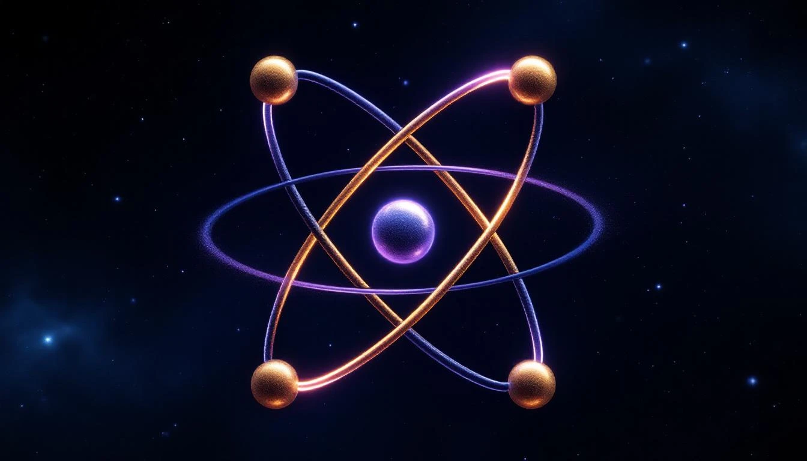

THE FIRST COMPLETE SHELL
Helium is special. With 2 protons, 2 neutrons, and 2 electrons, it represents the first complete fold configuration. Its first shell is full.
This completeness makes helium a noble gas - chemically inert, refusing to bond with other atoms. The fold is satisfied; it needs nothing more.
Helium Structure
HELIUM (Z = 2)
├── Nucleus: 2 protons + 2 neutrons (square knot)
├── Electrons: 2 (complete shell)
├── Configuration: 1s²
└── FIRST NOBLE GAS
Shell 1 capacity: 2(1)² = 2
Shell 1 occupied: 2
Shell 1 available: 0 ← COMPLETE
The fold closes on itself.
THE [1 = -1] PAIR
Helium's two electrons demonstrate the fundamental principle [1 = -1]. They occupy the same orbital but with opposite spins:
Spin Pairing
Electron 1: spin +½ (spin "up")
Electron 2: spin -½ (spin "down")
Together: +½ + (-½) = 0
[1 = -1] in action:
Opposite spins in the same space.
Perfect balance. Perfect stability.
Helium shows that completion = stability. The closed fold needs nothing.
THE SQUARE KNOT
The helium nucleus (2 protons + 2 neutrons) forms what we call a square knot in fold geometry. This is the alpha particle - one of the most stable nuclear configurations.
The alpha particle is so stable that heavy radioactive elements emit it as a unit when they decay. The fold prefers this configuration.
Alpha Particle Stability
Alpha particle = ⁴He nucleus
= 2 protons + 2 neutrons
= 4 nucleons in square arrangement
Binding energy per nucleon: 7.07 MeV
(Very high for such a light nucleus)
The square knot is TIGHT.
NOBLE GAS STABILITY
Helium is the first of the noble gases. The pattern continues:
- He (2) - Shell 1 complete
- Ne (10) - Shells 1+2 complete
- Ar (18) - First 3 shells complete (simplified)
- Kr (36), Xe (54), Rn (86)
Each noble gas represents a fold completion point - where the electron configuration reaches a state of perfect closure.